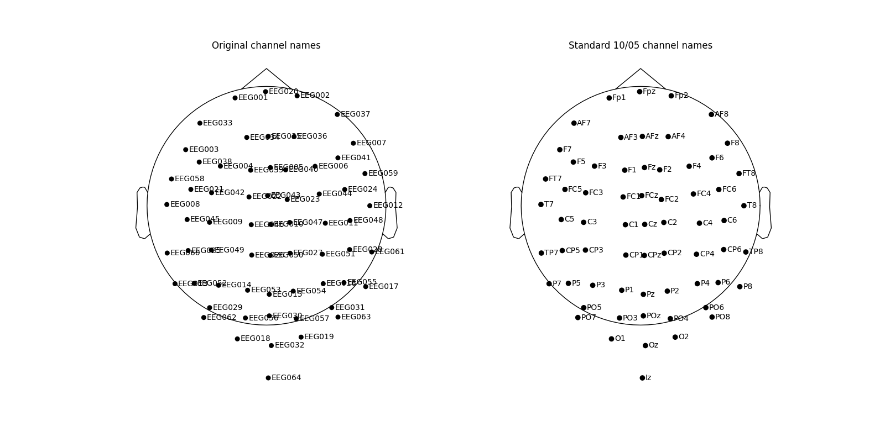

Note
Go to the end to download the full example code
Rename EEG channels🔗
Note
This example requires the meg_wiki package to download the sample dataset. This
package can be installed with pip:
$ pip install git+https://github.com/fcbg-hnp-meeg/meg-wiki
The EEG channel are named EEG 001, EEG 002, .. while they actually correspond to
a standard 10/05 naming. The EEG channel layouts are available in
this section.
from matplotlib import pyplot as plt
from mne import set_log_level
from mne.io import read_raw_fif
from meg_wiki.datasets import sample
from meg_wiki.eeg import load_mapping_64chs
set_log_level("WARNING")
fname = sample.data_path() / "eeg-layout" / "meg-eeg-raw.fif"
raw = read_raw_fif(fname, preload=False).pick("eeg")
raw.info
The mapping between the channel number and name in the standard 10/05 naming
convention can be loaded and applied to the MNE object. The EEG channels can be
visualize inn their true digitized location through the
DigMontage attached.
f, ax = plt.subplots(1, 2, figsize=(16, 8))
ax[0].set_title("Original channel names")
ax[1].set_title("Standard 10/05 channel names")
# plot original channel names
raw.get_montage().plot(axes=ax[0], show=False)
# rename EEG channels
mapping = load_mapping_64chs()
raw.rename_channels(mapping)
# plot renamed channel names
raw.get_montage().plot(axes=ax[1], show=False)
plt.show()

Total running time of the script: (0 minutes 1.779 seconds)
Estimated memory usage: 9 MB